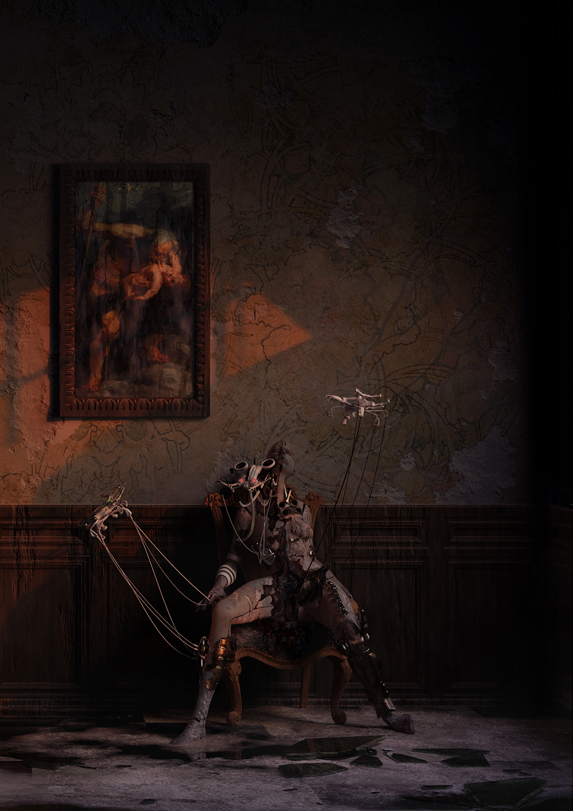
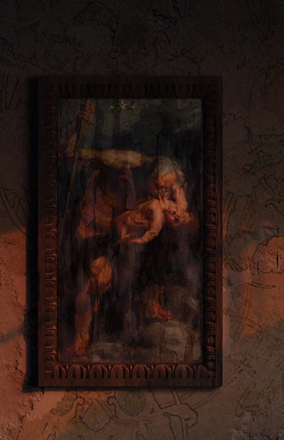
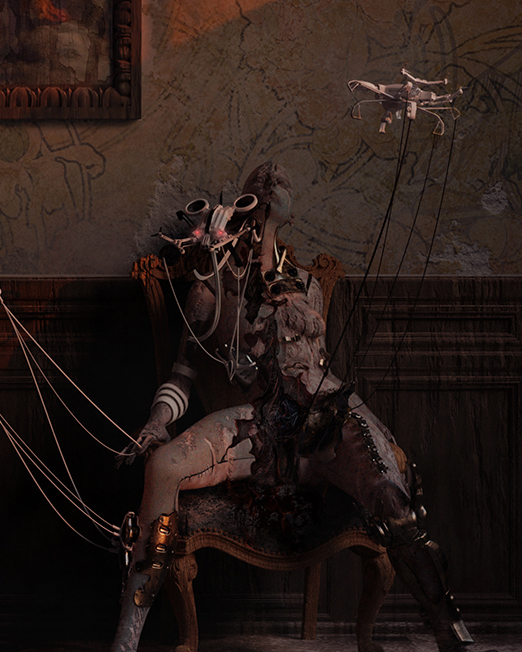
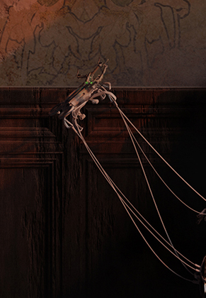
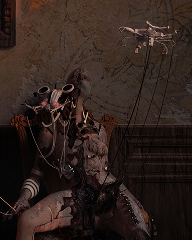

This experience is designed for desktop. Visit us on a larger screen.
Thanatos Deus — God of Death — is an exploration of the second coming of death. In a world increasingly mediated by technology, the boundary between the living and the mechanical has begun to dissolve. Drones and robotic creatures descend upon a human form, scavenging it for parts. The architecture around the figure deteriorates in sympathy, as though the soul leaving the body takes the built world with it.
This is not science fiction. It is a mirror held up to the present — an interrogation of what we are becoming, and what we have already lost.

Thanatos Deus — Full composition, 2024

Hanging on the deteriorating wall is a painting that echoes the Baroque masters — most directly, the chiaroscuro of Caravaggio's Deposition from the Cross (1603). The choice is deliberate: Caravaggio painted death not as abstraction but as weight, as flesh, as gravity. Here, the old painting becomes a witness to a new kind of death — one where the body is not mourned but harvested.
The painting-within-the-painting creates a temporal loop: the classical world observing its own obsolescence. Art bearing witness to the end of the body it once celebrated.

The central figure sits in what was once a throne — an ornate chair that signifies power, status, dominion. But the figure is no longer sovereign over its own form. The torso is opened, exposed, in a state between autopsy and metamorphosis. Binoculars or optical instruments replace the eyes, suggesting a being that can no longer see with human vision.
This recalls Mary Shelley's Frankenstein (1818) — not the monster, but the question it asked: at what point does the assembled body cease to be human? The figure in Thanatos Deus inverts Shelley's creature. Here, the human is not being built — it is being unmade.
I would like to make a statement and make people question themselves and our societies through art. The power a true piece of art can have is invaluable.
— Edwin Maliakkal
Hovering above the figure, a small drone — insect-like, articulated, precise — extracts material from the body with clinical indifference. It is neither malicious nor merciful. It simply performs its function. This is the terror: death without ceremony, without meaning, without witness.
In Greek mythology, Thanatos was the personification of death — the twin of Hypnos (sleep), gentle but absolute. Here, Thanatos has been mechanised. The angel of death is now an algorithm. The wires and tendons that connect scavenger to host echo the marionette strings of Kleist's On the Marionette Theatre (1810) — the puppet that moves more gracefully than the living because it has no consciousness to burden it.

A mechanical limb extends from the left, connected to the figure by a web of wires and cables that drape like tendons or veins. These are not severed connections — they are active transfers. The machine does not simply take; it siphons, reroutes, redistributes. The wires become a perverse umbilical cord: the machine is born from the death of the human.
H.R. Giger's biomechanical aesthetic — the fusion of organic tissue with industrial machinery — is a clear ancestor here. But where Giger's forms were often sexual and generative, these are entropic. The machine is not creating. It is composting.
The painting returns our gaze. Hanging above the scene like a judge presiding over a trial, it represents the entire weight of humanist tradition — the centuries in which the body was sacred, central, inviolable. Its presence turns the room into a courtroom. The old masters bear witness to what we have allowed to happen.
The frame itself is cracked, its gilding worn. Even art — the thing we built to outlast death — is not immune. If the body can be unmade, so can its monuments. The painting does not save us. It only remembers that we were once worth painting.
Thanatos Deus does not predict a future. It describes a present — one in which the human body is already a site of extraction, data harvest, and mechanical intervention. The work asks whether death, once the most private and sacred of human experiences, can survive its own automation.
In Rilke's Duino Elegies, the poet wrote that beauty is nothing but the beginning of terror. This image lives in that threshold — beautiful in its craft, terrifying in its implication. It is a memento mori for the age of machines.
Memento mori. Memento machina.